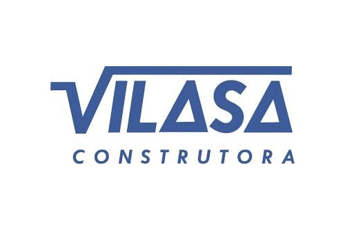

TOTVS RM
Implantação, tuning e sustentação contínua dos módulos RM, garantindo fluidez do ERP.
A CoreDB é especializada em consultoria e serviços de alta performance para Administração de Bancos de Dados (DBA) e otimização de sistemas TOTVS RM, Protheus e Fluig. Cuidamos da base e do ERP para que sua operação rode com velocidade, segurança e disponibilidade máximas.
Avaliamos a saúde do seu Protheus, RM, Fluig e Banco de Dados para identificar gargalos de performance, riscos e oportunidades de melhoria antes de propor qualquer solução.
Parceiros que contam com nossas equipes para manter ambientes TOTVS e bancos de dados com estabilidade, segurança e performance contínua.

Somos uma consultoria especializada em Administração de Bancos de Dados e otimização de sistemas TOTVS. Unimos experiência prática em RM, Protheus e Fluig a um atendimento próximo e cuidadoso, sempre focado em transformar desafios tecnológicos em resultados reais para o seu negócio.
Implantação, tuning e sustentação contínua dos módulos RM, garantindo fluidez do ERP.
Parametrização, integrações e segurança para um Protheus enxuto e estável.
Monitoramento, performance, governança e rotinas de backup com foco em alta disponibilidade.
Construção de fluxos, portais e automações que conectam pessoas, dados e documentos.
Colocamos o TOTVS RM e o Protheus na frente das iniciativas, conectando ERP e banco de dados em um fluxo único. Reduzimos complexidade, eliminamos gargalos e liberamos seu time para focar no que realmente importa.
Implementação, otimização e sustentação completa dos módulos TOTVS RM, garantindo fluidez operacional e integrações estáveis com Protheus, Fluig e banco de dados.
Parametrização e tuning de Protheus com foco em performance, segurança e aderência aos processos do negócio, sem interromper rotinas críticas.
Monitoramento, ajustes de performance, governança e rotinas de backup para bases seguras, disponíveis e preparadas para crescimento.
Desenho e automação de fluxos no Fluig, conectando pessoas, documentos e sistemas para um ambiente colaborativo e escalável.
Nossa atuação começa com um diagnóstico transparente e evolui para um plano estruturado de ação. Trabalhamos sempre conectando ERP, banco de dados e pessoas, para que a tecnologia realmente apoie o crescimento da sua empresa.
Entendemos o cenário real da sua operação: sistemas, rotinas críticas, infraestrutura, chamados recorrentes e impactos no negócio.
Definimos o melhor modelo para o momento da empresa — projeto fechado, suporte sob demanda ou alocação — com escopo e estimativas claros.
Atuamos em ERP e banco de dados, reduzindo lentidões, eliminando retrabalho e trazendo visibilidade para as áreas envolvidas.
Monitoramos, revisamos e ajustamos ao longo do tempo, garantindo que a solução acompanhe o crescimento e as mudanças do negócio.
Cuidamos do ERP e do banco de dados ao mesmo tempo, evitando “jogo de empurra” entre times diferentes e garantindo uma visão de ponta a ponta da sua operação.
Atendimento Direto
Você fala com quem resolve, sem burocracia ou camadas desnecessárias.
Visão Completa
Entendemos tanto do seu ERP quanto da base que sustenta tudo, garantindo performance e
estabilidade reais — não apenas paliativos.
Flexibilidade
Adaptamos forma de atuação, carga horária e modelo comercial à realidade e ao orçamento da sua
empresa.
CoreDB • Consultoria especializada em TOTVS e Bancos de Dados
E-mails, mensagens e informações enviadas pelo formulário são utilizados exclusivamente para responder à sua demanda. Nós respeitamos integralmente a LGPD (Lei Geral de Proteção de Dados) e seguimos seus principais princípios — como necessidade, finalidade, transparência e segurança. Não vendemos, compartilhamos ou reutilizamos seus dados para qualquer finalidade além do atendimento solicitado. Todas as informações são tratadas com responsabilidade e protegidas de acordo com as normas vigentes.
Preencha o formulário e retornaremos com um diagnóstico gratuito para entender sua realidade e indicar o melhor caminho em TOTVS e Banco de Dados.
Recebemos seu formulário e ele foi encaminhado para o e-mail corporativo da CoreDB. Nossa equipe retornará em breve para continuar a conversa.